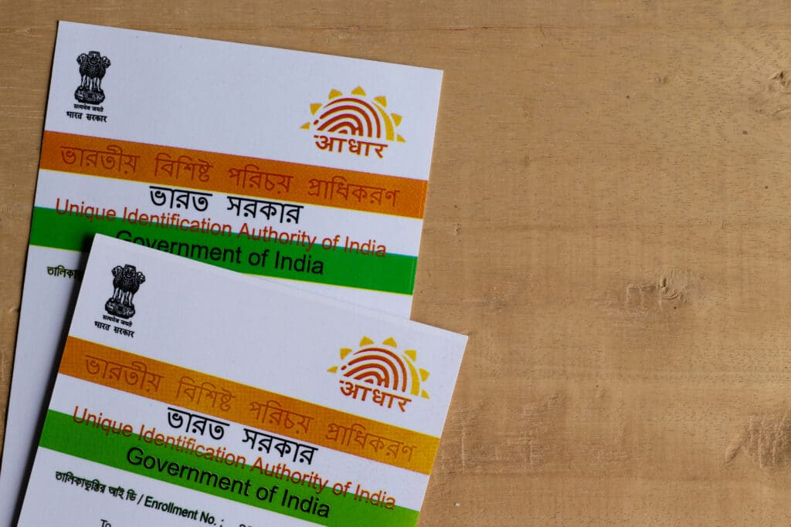

How India’s Plan of Democratizing Public Services Will Guide Other Countries and Break Monopolies
Over the last decade, India has built one of the world’s most ambitious experiments in digital public infrastructure. Instead of allowing essential services to be monopolised by a few private players, India chose open, interoperable platforms designed as public goods.
1. UPI: Democratization of Digital Payments

Unified Payments Interface (UPI) created a single interoperable payments layer that any bank or app could plug into, dramatically reducing costs and breaking closed payment monopolies.
2. ONDC: Democratization of E-Commerce

ONDC separates buyers and sellers from proprietary platforms, allowing small merchants to compete without being dependent on dominant intermediaries.
3. Aadhaar: Democratization of Identity

Aadhaar provided a universal digital identity that enabled efficient service delivery while reducing corruption and exclusion.
4. OCEN: Democratization of Credit

OCEN enables small-ticket loans using alternative data, opening formal credit access to millions of informal workers and MSMEs.
5. DigiLocker: Democratization of Documents

DigiLocker allows secure, paperless storage and verification of official documents, reducing bureaucracy and fraud.
6. ULIP & Logistics

India’s logistics digitalisation integrates rail, road, ports, and air cargo into a unified system, cutting costs and inefficiencies.
Conclusion
India’s digital public infrastructure shows that technology can be deployed as a public good. This model offers a scalable blueprint for countries seeking inclusive growth without monopolies.